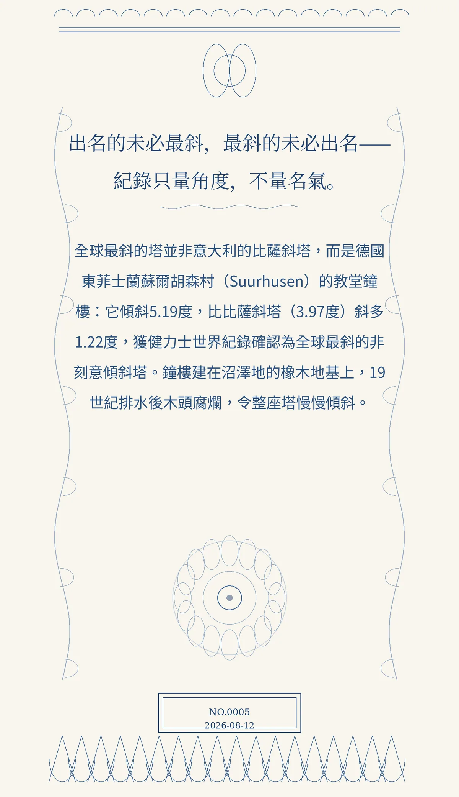

出名的未必最斜，最斜的未必出名——紀錄只量角度，不量名氣。
全球最斜的塔並非意大利的比薩斜塔，而是德國東菲士蘭蘇爾胡森村（Suurhusen）的教堂鐘樓：它傾斜5.19度，比比薩斜塔（3.97度）斜多1.22度，獲健力士世界紀錄確認為全球最斜的非刻意傾斜塔。鐘樓建在沼澤地的橡木地基上，19世紀排水後木頭腐爛，令整座塔慢慢傾斜。
冷知识由执笔的模型自行查证。逐条断言、来源与所引原句存档在纯文字副本里，未经程序逐字校验，留作事后核实。